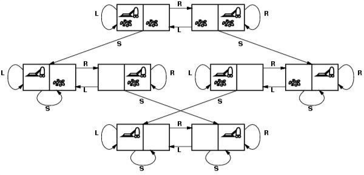

Created dinsdag 29 oktober 2019
First part | Core topics
Topic 1 Search and heuristics
Heuristics: human knowledge where they make estimates based on what they, for instance, know about the current state of the game or environment.
Topic 2: Adaptivity
Is crucial for agents as it is for humans; for us in the sense that we need adapt to the environment around us, thus identify objects, patterns or even threats.
Topic 3: Knowledge
The knowledge needed for agents so that they can
- Abstract a state
- Base possible solutions on the knowledge
- And act accordingly
Course expectations
Basic knowledge and insights in Information Systems:
- State space representations
- Basic Search Strategies & Advanced Search
- Agents
- Machine Learning
- Knowledge Based Reasoning
- Planning, Natural Language Processing, Robotics, Perception
Second part | Rational agents
Intelligent Systems: is about building intelligent agents; and is a subfield of AI
- this means building a rational agent that:
- chooses actions
- maximizes the expected value of the performance measure given the percepts; a sequence of instructions.
- According to the knowledge of its environment.
- This course, concept of agents, is based on the book Modern intro to AI; by Russell and Norvig
Agents
Rationality
Is about maximizing the expected value of the actions according the knowledge you have.
What is rational at given time depends on
- Expected value of performance measure (heuristics)
- Actions and choices (Search)
- Percept sequence to date (Learning)
- Prior environment knowledge, (KR)
Task
AN example of a fully automated taxi
- Performance (what it does)
- safety, destination, profits, legality and comfort
- streets other traffic and pedestrians
- Actuators (how it does it)
- steering, accelerating, brake, horn and speaker
- Sensors (what it perceives)
- Video, sonar, speedometer, engine sensors, keyboard,
Environments
Different types in which the agents should take into account
- Observable: fully vs partially; is the information you got fully or partially available?
- Deterministic: deterministic vs stochastic; after taking an action, do you exactly know where you'll end up?
- What will the next state look like after taking a certain action?
- Static: static vs dynamic; will the environment change after the agent takes a certain action?
- Discrete: discrete vs continuous; is there a finite number of actions that could be taken or an infinite one?
- Single-agent: does the environment contain other agents who also maximize performance measure?
Environments are either simple or hard; in the real world, u will encounter the harder one; most likely; partially observable, undeterministic, dynamic, continuous and multi-agents!
Agent types
- Simple reflex; measures something and takes actions accordingly.
- Reflex and state; the state is a representation of the world; which includes some
- Goal-based; an agent should have a goal so that it knows what the desired result would be and then chooses appropriate actions.
Third part
REPRESENTING PROBLEMS AS STATE SPACE PROBLEMS
For example a vacuum machine that has two state;
- Where to hover(to clean)?
- define what the states are; clean or dirty
- how the hover should decide where to move to clean the rooms?
State space: Should be abstracted form problem solving
- Start with a concrete real-life problem
- Formulate abstract, algorithmic problem
- Formulate states
- Actions
- Formulate concrete and algorithmic goal
- Clean the house / be in state 7 and 8
- Find solution
- Sequence of actions to get to state 7 or 8
- Execute plan
- Move and clean according to the (abstract) solution

- What actions and states to consider given a goal
- What are appropriate states and the initial states?
- What are possible actions to move between states?
- What is the cost of an action?
- Goal formulation
- What are the successful world states
- Search
- Determine possible sequences of actions that lead to goal states and choose the “best” sequence.
- Execute
- Give the solution perform the actions.
Summary
Start with defining what the different states are, then formulate a mathematical approach in which the program gets to the desired outcome.